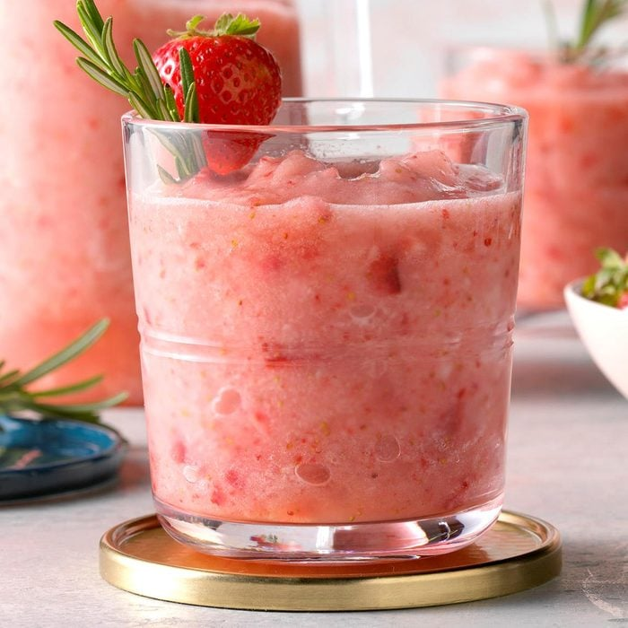
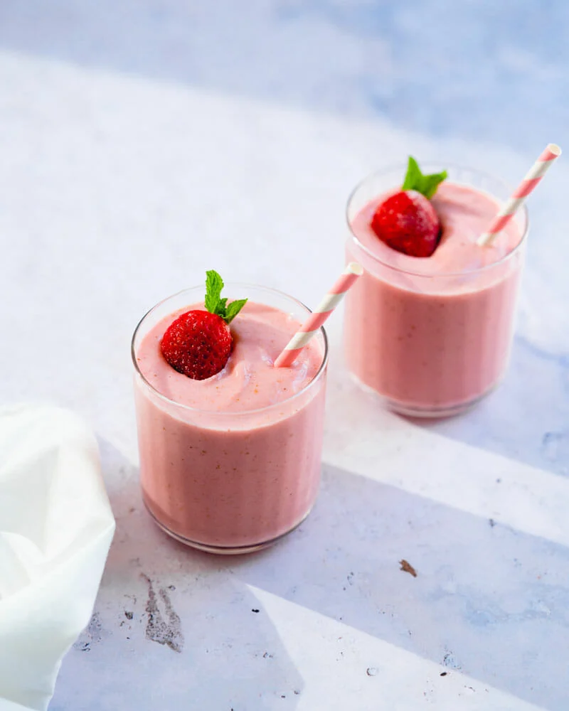

|
Home
|
Strawberry
|
Blueberry
|
Raspberry
|
References
|
Strawberries!
|
|
Strawberries are a beloved fruit known for their bright red color,
juicy texture, and sweet, slightly tart flavor. They belong to the
genus Fragaria and are unique in that they are the only fruit with
seeds on the outside! Nutritionally, strawberries are a powerhouse,
packed with vitamins, especially vitamin C, and they offer a good
dose of manganese, folate, and potassium. They are also low in
calories and high in fiber, making them an ideal choice for a
healthy diet.
|
|
|
In the culinary world, strawberries are incredibly versatile. They
can be eaten fresh, sliced into salads, or used as a decorative and
flavorful addition to desserts like cakes, tarts, and pastries.
Strawberries are also commonly used in preserves, jams, and jellies,
where their natural sweetness and vibrant color are highly prized.
In beverages, strawberries are a popular ingredient in smoothies,
milkshakes, and even cocktails. Here are some of my favorite recipes
involving strawberries:
Strawberry based Drinks
Strawberry Cake
Strawberry Smoothie
|
|


|
|
The fruit's popularity is also due to its association with romance
and luxury, often featured in romantic settings or as a decadent
treat when dipped in chocolate. Beyond their culinary uses,
strawberries have been studied for their potential health benefits,
including improving heart health, lowering blood pressure, and
having anti-inflammatory properties.
|
|